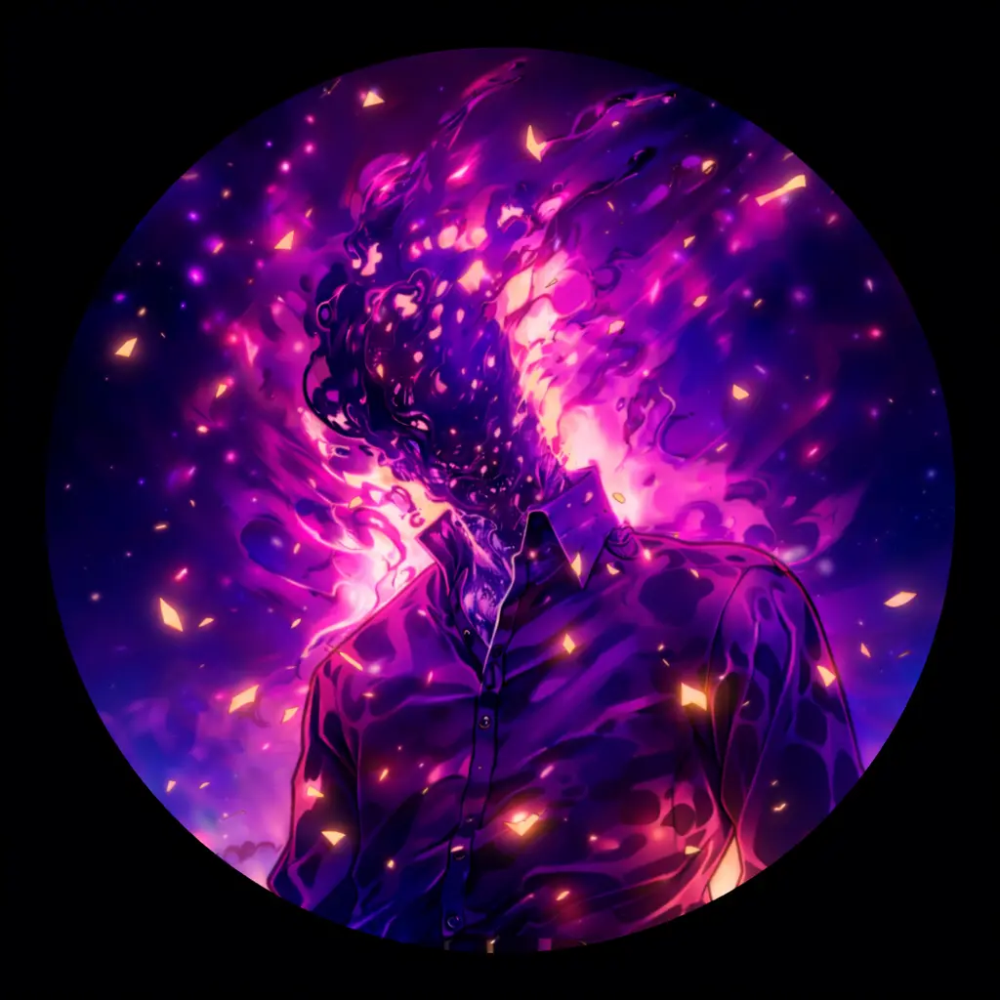

Halo Dunia, saya
Lazuardhi Akbar
Maulana Tsani.
>
Dikenal juga sebagai Lazuardhi. Saya adalah seorang Pelajar SMK dari Mojokerto, Jawa Timur yang memiliki passion mendalam terhadap infrastruktur IT, Keamanan Siber, dan Open Source.

Lokasi
SMKN 1 Kota Mojokerto, Jawa Timur
Indonesia
01. Tentang Saya
Berangkat dari rasa ingin tahu yang besar terhadap bagaimana dunia digital saling terhubung, saya memfokuskan diri untuk mempelajari dan mendalami Jaringan Komputer dan Keamanan Siber (Cyber Security).
Sebagai siswa SMK yang antusias, saya banyak menghabiskan waktu luang bereksperimen dengan Sistem Operasi Linux, mengonfigurasi perangkat jaringan seperti Cisco dan Mikrotik, serta menulis skrip otomasi menggunakan Python.
Motto saya adalah "Belajar dari nol, praktik sampai ahli." Saya percaya bahwa membangun fondasi IT yang kuat dimulai dari pemahaman konsep fundamental yang diiringi dengan praktik langsung (hands-on).
02.Matriks Keahlian
Teknologi dan tools yang saya pelajari dan gunakan sehari-hari.
Jaringan Komputer
Pemahaman mendalam tentang topologi, subnetting, routing, dan switching.
Sistem Operasi Linux
Administrasi server, manajemen user, permission, dan command line interface (CLI).
Keamanan Siber
Konsep dasar keamanan informasi, hardening sistem, dan analisis kerentanan jaringan.
Pemrograman Python
Pembuatan skrip otomatisasi tugas jaringan, analisis data dasar, dan pemecahan masalah algoritma.
Keterampilan Mengetik
Mampu mengetik dengan cepat dan efisien tanpa melihat keyboard (Touch Typing).
03.Sertifikasi Profesional
Bukti kompetensi dan komitmen saya dalam pembelajaran berkelanjutan di bidang IT.
Tidak ada sertifikat ditemukan
Coba gunakan kata kunci atau filter lain.
04.Mari Terhubung
Saya selalu terbuka untuk diskusi mengenai teknologi, peluang kolaborasi, atau sekadar berjejaring. Kotak masuk saya selalu terbuka!